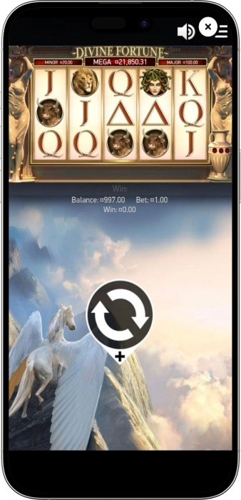
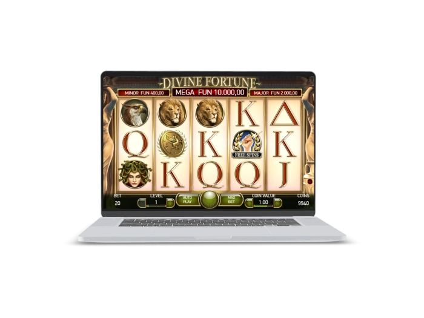

Exclusive welcome offer of
Exclusive welcome bonus of
Divine Fortune Slot — 96.59% RTP, Up to 12 Free Spins and 3 Jackpots
Top Casinos
Bonus Details
Casino
Bonuses
Rate
Free Spins
More Info
Get
Advantages
-
Progressive jackpots boost big-win potential strongly.
-
Falling Wilds keep spins active and lively.
-
Free Spins make bonus rounds feel richer.
-
Medium volatility suits balanced longer sessions.
-
Simple rules stay friendly for newcomers.
-
Greek mythology gives the slot identity.
-
Jackpot bonus adds separate prize excitement.
Divine Fortune App



About Divine Fortune
Divine Fortune is one of NetEnt’s best-known slots, built around an ancient Greek mythology theme and a very approachable game structure.
It uses a 5x3 layout with 20 fixed paylines, so the gameplay feels clear and easy to follow from the very first spins. The core excitement comes from Falling Wilds Re-Spins, where wilds stay active and can keep the reels alive longer than a regular base spin.

The free spins round adds even more energy because wilds become much more impactful and can expand across full reels. A major part of the slot’s identity is the jackpot bonus with three reward levels, which gives the game its famous progressive edge. Overall, Divine Fortune feels like a polished mythological slot that combines readable mechanics, strong bonus design, and memorable jackpot potential.
Divine Fortune — slot review and features
Divine Fortune Slot Features and Core Mechanics
Divine Fortune is a medium-volatility video slot that keeps the rules simple while making the gameplay feel lively and rewarding. The game uses a classic 5-reel, 3-row layout with 20 fixed paylines, so players can understand the structure quickly without losing the excitement of layered bonus features. Falling Wilds Re-Spins, Wild on Wild expansions, free spins, and a three-level jackpot feature give the slot more depth than a basic mythology-themed game. This balance makes Divine Fortune attractive both for players exploring progressive slots and for those who enjoy steady, readable gameplay.
Divine Fortune Key Characteristics
- • Provider: NetEnt
- • Layout: 5 reels x 3 rows
- • Paylines: 20 fixed paylines
- • RTP: 96.59%
- • Volatility: Medium
- • Hit frequency: around 20%
- • Bet range: 0.20 to 100
- • Features: Falling Wilds Re-Spins, Wild on Wild, Free Spins, Jackpot Bonus
- • Free spins: 5, 8, or 12
- • Jackpots: Minor, Major, Mega
Where to Play Divine Fortune
Divine Fortune is usually available on licensed online gaming platforms that include NetEnt content in their slot libraries. The game can often be found both in real-money mode and in free-play format for players who want to explore the mechanics first. It works well on desktop, smartphone, and tablet devices, which makes access flexible and convenient. In many game lobbies, Divine Fortune appears in sections dedicated to progressive jackpots, mythology slots, or classic NetEnt titles. The best playing environment is a platform with clear game rules, an accessible paytable, and a transparent RTP version.
Divine Fortune Demo Mode Overview
The Divine Fortune demo mode lets players explore the slot without risking real money and without putting pressure on their bankroll. The free version keeps the same reels, paylines, symbols, and core features, including Falling Wilds, Free Spins, and the Jackpot Bonus structure. This makes demo play especially useful for understanding the pace of the game and seeing how often re-spins appear compared with the rarer premium bonus moments. While demo wins cannot be withdrawn, the mode is excellent for learning the slot and choosing a comfortable betting style.
Divine Fortune Paytable Overview
The Divine Fortune paytable is built around a clear symbol hierarchy, with premium mythology icons at the top and lower-value card symbols supporting smaller base-game wins. This structure makes the slot easy to read and helps players understand where the strongest line value comes from. The table below highlights the main payout groups and their role in the gameplay.
| Symbol | Payout for 3 / 4 / 5 | Feature Note |
|---|---|---|
| Wild (Pegasus) | x1 / x4 / x30 | Substitutes for regular symbols and starts Falling Wilds |
| Medusa | x1 / x4 / x30 | One of the highest regular-paying symbols |
| High Premium Symbol | x0.9 / x3 / x20 | Strong base-game payout value |
| Mid Premium Symbol | x0.8 / x2.5 / x15 | Reliable premium line support |
| Premium Symbol | x0.7 / x2 / x10 | Mid-tier mythology value |
| Low Symbols A/K Group | x0.35 / x0.9 / x4 | Supports frequent smaller hits |
| Low Symbols Q/J Group | x0.3 / x0.75 / x3 | Most common low-value combinations |
How Players Usually Win in Divine Fortune
Players do not usually get the best results in Divine Fortune by raising the stake aggressively or trying to force a quick comeback. In real play, the slot tends to perform better when it is approached with patience, because the rhythm often builds through Falling Wilds Re-Spins before a stronger bonus sequence appears. The base game can stay active, but the most memorable wins usually come from a well-timed free spins round or from the coin-based jackpot feature. In practical terms, a stable betting level and enough session balance to survive quieter stretches work better than emotional stake changes. The strongest approach is to treat Divine Fortune as a game of timing, discipline, and bonus awareness rather than guaranteed short-term wins.
Software Providers
Divine Fortune — bonuses, features, and how to play
Divine Fortune Bonuses, Special Features, and Extra Offers
Divine Fortune stands out because it combines several layers of bonus activity instead of relying on a single feature. The slot keeps the base game lively through Falling Wilds Re-Spins, adds stronger reel behavior through Wild on Wild, and then builds extra excitement with free spins and a dedicated jackpot bonus. This creates a smoother session flow because the player can experience smaller bursts of action before reaching the rarer premium features. The free spins round feels especially valuable because wilds become much more powerful and can cover full reels. The jackpot feature adds long-range excitement by opening the path to Minor, Major, and Mega rewards. As for external promotions, Divine Fortune usually fits best with free spins packages, cashback deals, and slot tournament campaigns, although those offers depend on the platform rather than the slot itself.
Divine Fortune In-Game Bonuses
- • Falling Wilds Re-Spins — every landed wild can drop down one position and trigger a re-spin, keeping the same spin alive and improving the chance of connecting additional symbols.
- • Wild on Wild — when an overlay wild lands on an existing wild, it expands to cover the full reel, which can create some of the slot’s most visually powerful line wins.
- • Free Spins — 3 scatters award 5 free spins, 4 scatters award 8, and 5 scatters award 12, with stronger wild behavior during the round.
- • Jackpot Bonus — 3 or more bonus symbols in the base game unlock a coin feature where each coin can carry a value from 10x to 200x the original bet.
- • Minor, Major, and Mega Jackpots — filling 1 row awards Minor, 2 rows award Major, and the full grid awards Mega Jackpot.
Common Promotional Examples for Divine Fortune
- • Free spins offers — a typical example may include 20, 50, or 100 free spins for selected mythology or progressive slots, depending on the campaign rules.
- • Cashback deals — players may see examples such as 5% to 15% cashback, which can make longer sessions feel smoother without changing the game’s internal math.
- • Slot tournaments — weekly or weekend leaderboard events can add an extra competitive layer for active slot players.
Why These Bonuses Matter
- • In-game features shape the real identity of Divine Fortune, while platform promotions can extend playtime, soften variance, or add extra value around the slot experience.
Divine Fortune Free Spins and Multipliers Table
The free spins feature in Divine Fortune is triggered by scatters, but the bonus round feels stronger than in many standard slots because wilds can become full-reel expansions. In addition to free spins, the slot also includes a separate jackpot bonus where coin values introduce direct bet multipliers. This gives the game two different reward paths: bonus spins and jackpot progression.
| Trigger | Reward | Boost / Multiplier |
|---|---|---|
| 3 Scatters | 5 Free Spins | Wilds can expand across the full reel |
| 4 Scatters | 8 Free Spins | Longer bonus cycle with the same enhanced wild behavior |
| 5 Scatters | 12 Free Spins | Maximum standard free spins package |
| 3+ Bonus Symbols in Base Game | Jackpot Bonus | Coins can carry values from 10x to 200x bet |
| 1 Filled Coin Row | Minor Jackpot | First jackpot level |
| 2 Filled Coin Rows | Major Jackpot | Mid-tier jackpot level |
| 3 Filled Coin Rows | Mega Jackpot | Top progressive reward |
How to Play Divine Fortune
Divine Fortune is easy to start because it uses a classic reel structure and fixed paylines that do not require extra setup. The player chooses a bet, launches a spin or autoplay, and then follows the symbol interactions across the 5x3 grid. The key is not only to watch line wins, but also to understand which symbols trigger re-spins, free spins, and the jackpot feature.
Step-by-Step Divine Fortune Guide
- • Choose a comfortable stake that matches your session balance.
- • Remember that all 20 paylines are fixed and already active.
- • Press Spin or use Auto Play to start the round.
- • Watch for wilds, because they trigger Falling Wilds Re-Spins.
- • Track scatter symbols, since 3, 4, or 5 scatters award 5, 8, or 12 free spins.
- • Look for 3 or more bonus symbols in the base game to enter the Jackpot Bonus.
- • Use the paytable to understand symbol value and feature priority more clearly.
Divine Fortune Playing Tips
Divine Fortune usually feels best in a calm, controlled session where the stake stays consistent and decisions are not driven by emotion. The slot has medium volatility, but its most important bonus moments do not always arrive in short bursts, so session planning matters. The better a player understands Falling Wilds, Free Spins, and the Jackpot Bonus, the smoother and more logical the experience becomes.
Useful Tips for Divine Fortune
- • Start in demo mode to understand the slot’s pace and the role of re-spins.
- • Keep your betting level steady instead of changing it impulsively.
- • Leave enough bankroll room for a full bonus cycle rather than judging the slot too quickly.
- • Do not rely on one feature alone, because smaller re-spin activity and larger bonus events play different roles.
- • Check the game version if multiple RTP settings are available.
- • Set clear stop-loss and stop-win limits before the session starts.
Divine Fortune Mistakes That Drain the Bankroll
The most common Divine Fortune mistakes are usually caused by unrealistic expectations and poor stake control rather than by the slot itself. Because the game often feels active through re-spins, some players start assuming that a major bonus must be close, even though the slot keeps its own natural rhythm. In most cases, bankroll damage comes from a chain of emotional decisions, not from one unlucky spin.
Common Divine Fortune Bankroll Mistakes
- • Starting with a stake that is too high for the session balance.
- • Raising the bet aggressively after dead spins in an attempt to recover losses.
- • Misreading Falling Wilds as a guarantee of a strong payout every time.
- • Expecting the jackpot feature to appear quickly just because the slot is progressive.
- • Ignoring that the Jackpot Bonus is tied to the base game structure.
- • Judging the slot too early after only a very short sample of spins.
- • Playing without preset time, loss, or win limits.
Frequently Asked Questions
Yes in terms of mechanics, because the game model stays the same. The main difference is usually the interface scale and control placement.
It combines an ancient Greek atmosphere with very readable mechanics. Many similar games feel more complicated, while Divine Fortune stays clear and focused.
Yes, Falling Wilds Re-Spins help the base game feel alive. Even when a major feature does not land, the slot often keeps the reels interesting.
Progressive jackpots work on an accumulating model, so after a payout the main prize begins building again. That is a normal feature of this slot type.
Yes, because many rewards in Divine Fortune are linked to the current bet. A higher stake increases the absolute value of multipliers and jackpot-related rewards.
Because it successfully blends classic structure with strong bonus depth. The clean mechanics, mythology theme, and memorable jackpot feature give it long-lasting appeal.